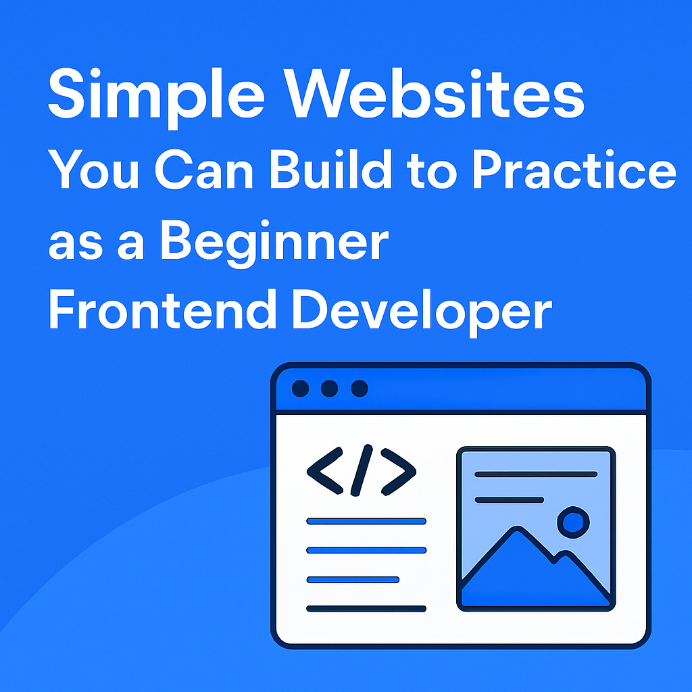

Simple Websites You Can Build to Practice as a Beginner Frontend Developer.

"Start simple. Build confidence. Grow fast."
When you’re learning frontend development, one of the best ways to grow is through practice. Not just writing code for tutorials, but building your own small, meaningful projects, even if no one else ever sees them.
In this blog post, I’m sharing some simple website ideas you can build to sharpen your skills as a beginner. These projects don’t require advanced knowledge, but they will stretch you in ways that help you understand the core principles of HTML, CSS, and JavaScript.
A personal portfolio website is more than just a project, it’s your digital handshake. It teaches you structure, layout, and how to present yourself professionally. Plus, it’s something you’ll always update as your skills grow.
A fictional business website is a great practice ground. You can build a landing page for a skincare brand, a tech startup, or even a coffee shop. Focus on clean design, good typography, and layout structure. This helps you understand how real businesses think about their websites.
A blog layout forces you to think about structure: headers, body text, sidebars, and footers. Even without complex back-end systems, you can practice how to design and style readable content, making good use of spacing, fonts, and visual hierarchy.
A simple e-commerce landing page challenges your understanding of grids, buttons, product cards, and calls to action. You don’t need full functionality, focus on clean UI and clarity of communication.
An event or conference website (real or fictional) helps you learn to present schedules, speaker profiles, and registration forms. It’s also a nice opportunity to work on responsive layouts and clean design.
A digital resume or CV website is another project that strengthens your sense of layout, structure, and hierarchy. It’s also something you can personally use while applying for jobs.
A photo gallery or portfolio (even with placeholder images) will teach you how to handle grids, hover effects, and present visual content attractively.
Each of these projects will force you to make design decisions, solve small problems, and get comfortable with repetition, all key parts of becoming a confident frontend developer.
Remember: the goal isn’t perfection. It’s progress.
Every simple website you build makes the next one easier.
Final Thoughts
Don’t overthink your practice projects. Start with these small ideas and watch how your confidence and skills grow. The more you build, the better you see, not just code, but design, structure, and user experience.
Your future self will thank you for starting now.
Liked this post? Share it with another beginner frontend developer.